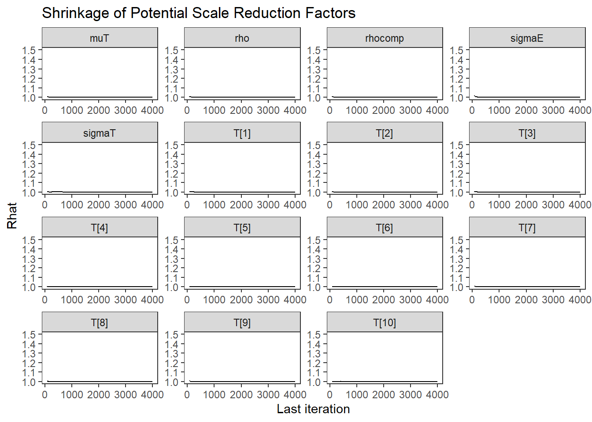
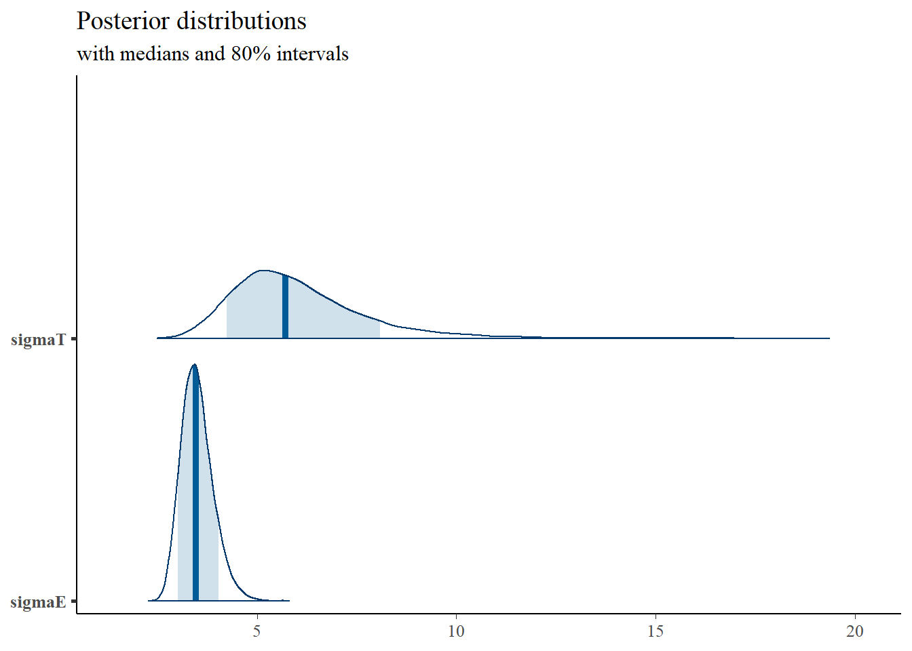
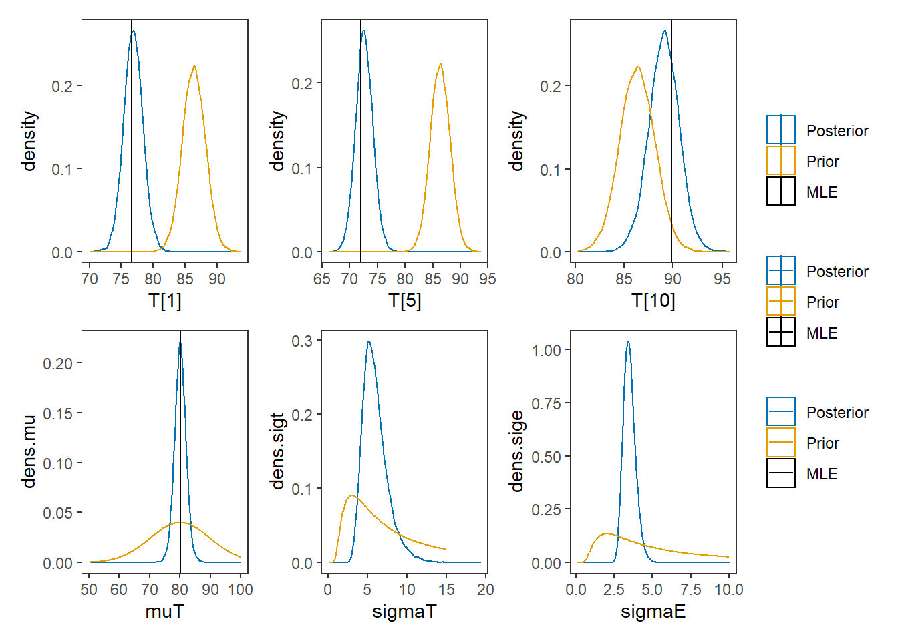

8.8 Example 3 - Stan
model_ctt3 <- '
data {
int N;
int J;
matrix[N, J] X;
}
parameters {
real T[N];
real muT;
real<lower=0> sigmaT;
real<lower=0> sigmaE;
}
model {
for(i in 1:N){
T[i] ~ normal(muT, sigmaT);
for(j in 1:J){
X[i, j] ~ normal(T[i], sigmaE);
}
}
muT ~ normal(80, 10);
sigmaT ~ inv_gamma(1, 6);
sigmaE ~ inv_gamma(1, 4);
}
generated quantities {
real rho;
real rhocomp;
rho = square(sigmaT)/(square(sigmaT) + square(sigmaE));
rhocomp = J*rho/((J-1)*rho + 1);
}
'
# data must be in a list
mydata <- list(
N = 10, J = 5,
X = matrix(
c(80, 77, 80, 73, 73,
83, 79, 78, 78, 77,
85, 77, 88, 81, 80,
76, 76, 76, 78, 67,
70, 69, 73, 71, 77,
87, 89, 92, 91, 87,
76, 75, 79, 80, 75,
86, 75, 80, 80, 82,
84, 79, 79, 77, 82,
96, 85, 91, 87, 90),
ncol=5, nrow=10, byrow=T)
)
# initial values
start_values <- function(){
list(T=c(80,80,80,80,80,80,80,80,80,80),
muT=80, sigmaT=10, sigmaE=5)
}
# Next, need to fit the model
# I have explicitly outlined some common parameters
fit <- stan(
model_code = model_ctt3, # model code to be compiled
data = mydata, # my data
init = start_values, # starting values
chains = 4, # number of Markov chains
warmup = 1000, # number of warm up iterations per chain
iter = 5000, # total number of iterations per chain
cores = 4, # number of cores (could use one per chain)
refresh = 0 # no progress shown
)## Warning in system(paste(CXX, ARGS), ignore.stdout = TRUE, ignore.stderr =
## TRUE): '-E' not found# first get a basic breakdown of the posteriors
print(fit)## Inference for Stan model: 8af61d5f99903650a9f4417c76fd9a69.
## 4 chains, each with iter=5000; warmup=1000; thin=1;
## post-warmup draws per chain=4000, total post-warmup draws=16000.
##
## mean se_mean sd 2.5% 25% 50% 75% 97.5%
## T[1] 76.87 0.01 1.53 73.87 75.86 76.86 77.90 79.90
## T[2] 79.08 0.01 1.54 76.09 78.06 79.08 80.11 82.08
## T[3] 82.04 0.01 1.51 79.09 81.03 82.04 83.04 85.03
## T[4] 75.02 0.01 1.52 72.05 74.01 75.02 76.02 78.06
## T[5] 72.60 0.01 1.52 69.64 71.58 72.60 73.61 75.60
## T[6] 88.52 0.01 1.54 85.49 87.49 88.54 89.56 91.53
## T[7] 77.23 0.01 1.54 74.25 76.21 77.21 78.26 80.28
## T[8] 80.55 0.01 1.51 77.56 79.55 80.54 81.53 83.53
## T[9] 80.19 0.01 1.51 77.26 79.18 80.18 81.19 83.14
## T[10] 89.07 0.01 1.55 85.97 88.06 89.09 90.11 92.06
## muT 80.10 0.02 1.99 76.17 78.84 80.10 81.34 84.04
## sigmaT 6.03 0.01 1.68 3.67 4.87 5.73 6.86 10.04
## sigmaE 3.50 0.00 0.40 2.82 3.21 3.46 3.74 4.39
## rho 0.72 0.00 0.11 0.49 0.66 0.73 0.80 0.90
## rhocomp 0.92 0.00 0.04 0.83 0.90 0.93 0.95 0.98
## lp__ -115.06 0.04 2.86 -121.63 -116.72 -114.66 -112.98 -110.62
## n_eff Rhat
## T[1] 25673 1
## T[2] 29294 1
## T[3] 27260 1
## T[4] 27424 1
## T[5] 23635 1
## T[6] 22939 1
## T[7] 30949 1
## T[8] 25073 1
## T[9] 28241 1
## T[10] 25912 1
## muT 17119 1
## sigmaT 16441 1
## sigmaE 16557 1
## rho 19364 1
## rhocomp 18382 1
## lp__ 5897 1
##
## Samples were drawn using NUTS(diag_e) at Mon Apr 05 02:41:05 2021.
## For each parameter, n_eff is a crude measure of effective sample size,
## and Rhat is the potential scale reduction factor on split chains (at
## convergence, Rhat=1).# plot the posterior in a
# 95% probability interval
# and 80% to contrast the dispersion
plot(fit)## 'pars' not specified. Showing first 10 parameters by default.## ci_level: 0.8 (80% intervals)## outer_level: 0.95 (95% intervals)
# traceplots
rstan::traceplot(fit, pars = c("T", "muT", "sigmaT", "sigmaE", "rho", "rhocomp"), inc_warmup = TRUE)
# Gelman-Rubin-Brooks Convergence Criterion
p1 <- ggs_grb(ggs(fit)) +
theme_bw() + theme(panel.grid = element_blank())
p1
# autocorrelation
p1 <- ggs_autocorrelation(ggs(fit)) +
theme_bw() + theme(panel.grid = element_blank())
p1
# plot the posterior density
plot.data <- as.matrix(fit)
plot_title <- ggtitle("Posterior distributions",
"with medians and 80% intervals")
mcmc_areas(
plot.data,
pars = c(paste0("T[",1:10,"]"), "muT"),
prob = 0.8) +
plot_title
mcmc_areas(
plot.data,
pars = c("sigmaT", "sigmaE"),
prob = 0.8) +
plot_title
mcmc_areas(
plot.data,
pars = c("rho", "rhocomp"),
prob = 0.8) +
plot_title
# I prefer a posterior plot that includes prior and MLE
# Expanded Posterior Plot
MLE <- c(rowMeans(mydata$X), mean(mydata$X))
prior_mu <- function(x){dnorm(x, 80, 10)}
x.mu<- seq(50.1, 100, 0.1)
prior.mu <- data.frame(mu=x.mu, dens.mu = prior_mu(x.mu))
prior_sigt <- function(x){dinvgamma(x, 1, 6)}
x.sigt<- seq(.1, 15, 0.1)
prior.sigt <- data.frame(sigt=x.sigt, dens.sigt = prior_sigt(x.sigt))
prior_sige <- function(x){dinvgamma(x, 1, 4)}
x.sige<- seq(.1, 10, 0.1)
prior.sige <- data.frame(sige=x.sige, dens.sige = prior_sige(x.sige))
prior_t <- function(x){
mu <- rnorm(1, 80, 10)
sig <- rinvgamma(1, 1, 4)
rnorm(x, mu, sig)
}
x.t<- seq(50.1, 100, 0.1)
prior.t <- data.frame(tr=prior_t(10000))
cols <- c("Posterior"="#0072B2", "Prior"="#E69F00", "MLE"= "black")#"#56B4E9", "#E69F00" "#CC79A7"
plot.data <- as.data.frame(plot.data)
p1 <- ggplot()+
geom_density(data=plot.data, aes(x=`T[1]`, color="Posterior"))+
geom_density(data=prior.t,aes(x=tr,color="Prior"))+
geom_vline(aes(xintercept=MLE[1], color="MLE"))+
scale_color_manual(values=cols, name=NULL)+
theme_bw()+
theme(panel.grid = element_blank())
p2 <- ggplot()+
geom_density(data=plot.data, aes(x=`T[5]`, color="Posterior"))+
geom_density(data=prior.t,aes(x=tr,color="Prior"))+
geom_vline(aes(xintercept=MLE[5], color="MLE"))+
scale_color_manual(values=cols, name=NULL)+
theme_bw()+
theme(panel.grid = element_blank())
p3 <- ggplot()+
geom_density(data=plot.data, aes(x=`T[10]`, color="Posterior"))+
geom_density(data=prior.t,aes(x=tr,color="Prior"))+
geom_vline(aes(xintercept=MLE[10], color="MLE"))+
scale_color_manual(values=cols, name=NULL)+
theme_bw()+
theme(panel.grid = element_blank())
p4 <- ggplot()+
geom_density(data=plot.data, aes(x=`muT`, color="Posterior"))+
geom_line(data=prior.mu,aes(x=mu,y=dens.mu,color="Prior"))+
geom_vline(aes(xintercept=MLE[11], color="MLE"))+
scale_color_manual(values=cols, name=NULL)+
theme_bw()+
theme(panel.grid = element_blank())
p5 <- ggplot()+
geom_density(data=plot.data, aes(x=`sigmaT`, color="Posterior"))+
geom_line(data=prior.sigt,aes(x=sigt,y=dens.sigt,color="Prior"))+
scale_color_manual(values=cols, name=NULL)+
theme_bw()+
theme(panel.grid = element_blank())
p6 <- ggplot()+
geom_density(data=plot.data, aes(x=`sigmaE`, color="Posterior"))+
geom_line(data=prior.sige,aes(x=sige,y=dens.sige,color="Prior"))+
scale_color_manual(values=cols, name=NULL)+
theme_bw()+
theme(panel.grid = element_blank())
p1 + p2 + p3 + p4 + p5 + p6 + plot_layout(ncol=3, guides="collect")